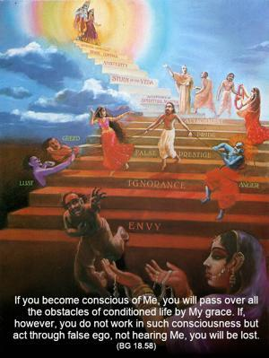
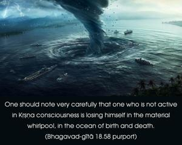

If you become conscious of Me, you will pass over all the obstacles of conditioned life by My grace. If, however, you do not work in such consciousness but act through false ego, not hearing Me, you will be lost.


A person in full Kṛṣṇa consciousness is not unduly anxious about executing the duties of his existence. The foolish cannot understand this great freedom from all anxiety. For one who acts in Kṛṣṇa consciousness, Lord Kṛṣṇa becomes the most intimate friend. He always looks after His friend’s comfort, and He gives Himself to His friend, who is so devotedly engaged working twenty-four hours a day to please the Lord. Therefore, no one should be carried away by the false ego of the bodily concept of life. One should not falsely think himself independent of the laws of material nature or free to act. He is already under strict material laws. But as soon as he acts in Kṛṣṇa consciousness, he is liberated, free from the material perplexities. One should note very carefully that one who is not active in Kṛṣṇa consciousness is losing himself in the material whirlpool, in the ocean of birth and death. No conditioned soul actually knows what is to be done and what is not to be done, but a person who acts in Kṛṣṇa consciousness is free to act because everything is prompted by Kṛṣṇa from within and confirmed by the spiritual master.